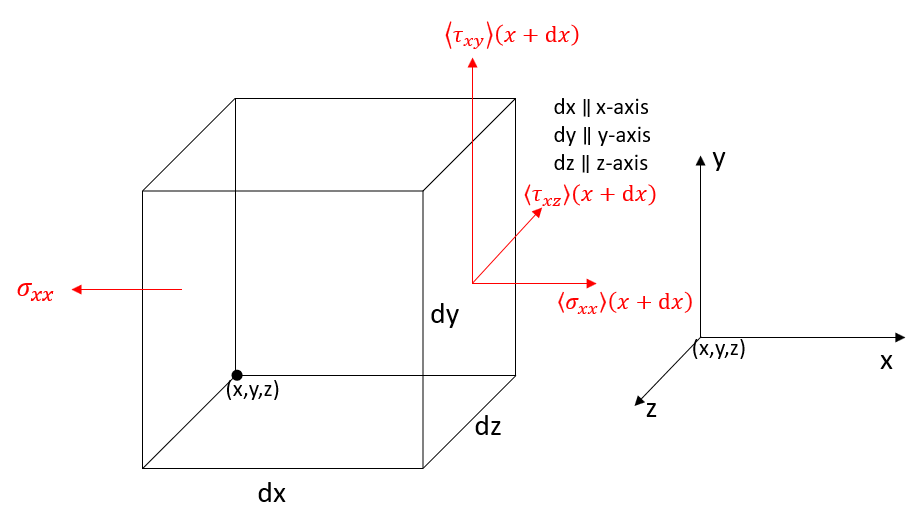

Navier Stoke Equation
Contents
Navier Stoke Equation#
(Lecture 8 Part 1)
Navier-Stoke Equation#
Navier-Stokes equation, in fluid mechanics, is a set of two partial differential equations that describes the flow of incompressible fluids.
and
where \(\rho\) is density and \(p\) is pressure (scalars); \(g\) is gravity and \(v\) is velocity (vectors).
The first equation ((246)) states that the motion of fluid is predominantly governed by gravity, pressure and viscosity. The second equation ((247)) represents the mass continuity.
Equation (246) and (247) is governed by and derived from the Newton’s second law of motion (248) and Law of Conservation of Mass ((249)) respectively.
The mass continuity equation is easy to obtain by equating all the mass flow rates into and out of the differential control volume. Hence, the following derivation is focused solely on the governing equation ((246)). We can start from the Newton’s second law of motion:
where \(\vec{F_{p}}\) is force due to pressure and \(\vec{F_{v}}\) is force due to viscosity; they are known as the internal forces. There are many external forces due to gravity, electromagnetism and etc. However, we consider the gravity \(\vec{F_{g}}\) as the only external force for simplicity.
The equation is developed by summing up the forces of an infinitesimal control volume \(V\) (\(V=d_{x}d_{y}d_{z}\)) in Cartesian coordinate system, and setting the result equal to \(m\vec{a}\). This is demonstrated in the figure below for viscosity forces.
Viscosity Forces#

Figure 1: Infinitesimal control volume \(V\) (left) and Cartesian coordinate system (right). Examples of stresses acting on different planes and directions are also shown.
We define x-planes are the planes that are perpendicular to x-axis; As shown above, we can see that longitudinal stress \(\sigma_{xx}\) represents the stress that acts on x-plane in the direction of x-axis; shear stress \(\tau_{xy} \) represents the stress that acts on x-plane in the direction of y-axis. \(\langle\sigma_{xx} \rangle(x+dx)\) is the longitudinal stress acting on x-plane at \(x+dx\).
Due to the redundancy in 3D derivation, we shall analysis the stresses just in x-direction and conclude the resulting equation hold true for the other two directions by symmetry. Figure 2 shows the stresses in x-direction only.

Figure 2: Longitudinal stresses (\(\sigma_{xx}\)) in (a) and shear stresses (\(\tau_{xy} \)) in (b) & (c) in x-direction from six planes. Shear stresses are due to viscosity and longitudinal stresses are created by pressure.
Note that the longitudinal stresses \(\sigma_{xx}\) acting on two x-planes are not the same. We can apply Taylor Series to interpolate the \(\sigma_{xx}\) evaluated at \(x+dx\) based on the value of \(\sigma_{xx}\) at \(x\):
where \(\tau_{yx}(y+dy)\) and \(\tau_{zx}(z+dz)\) can be expressed by the same logic.
Once we obtain the stress and pressure, we can get the force by multiplying the surface area (\(A=dx\,dy=dx\,dz= dy\,dz\)):
Plugging in (251) into (252) to replace \(\langle\sigma_{xx} \rangle(x+dx)\), we have
since \(V=dxdydz\).
Dividing \(V\) at the both sides, we have the viscosity forces per unit volume in the x-direction as follow
Now, the question becomes how to express normal stress \(\sigma_{xx}\) and shear stress \(\tau_{yx}\) and \(\tau_{zx}\)?
2D Stress#
Let’s consider the shear stress \(\tau\) in a 2d problem

Figure 3: If rotational equilibrium, then net torque equals zero. In another word, \(\tau_{xy}\) is a reaction stress of \(\tau_{yx}\), and they are the same.
If we assume the change of angle \(\delta \alpha\) (strain) is tiny, then we can say that
where \(u_0\) is the original horizontal velocity of the block.
We can define the rate of the change of the angle \(\delta \alpha\) as strain rate (\(\frac{\delta \alpha}{dt}\))
Same logic applies to the rate of change of angle \(\beta\)
So the total rate of change of angle (\(\alpha+\beta\)) or the total strain rate due to shear stress is
Since we know that shear stress \(\tau\) equals viscosity \(\mu\) multiplies strain rate, we can have the following expression
since we know that \(\tau_{xy}\) and \(\tau_{yx}\) is one thing, they are the reactional existence of one another.
As for normal stress \(\sigma_{xx}\) or \(\sigma_{yy}\), we have the strain from both sides, so we have doubled the strain rate from a single side.

Figure 4
3D Stress#
If we apply the same logic, we can have the normal and shear stresses in 3D problem due to viscosity alone
where \(w\) is the z-direction velocity.
Finally, if we plug in equations (262), (265) and (267) into the equation (254), we find that the viscous forces in the x-directions per unit volume of the element is, for constant viscosity,
All of these expressions can be further simplified by substituting the continuity equation (265) differentiated wrt. \(x\).
Plugging in equation (270) into (268), we arrive at
and same logic applies to the y and z direction
and
as the expressions for the net viscous forces per unit volume in the y and z directions, respectively.
Pressure Forces#
It is not hard to find that the net pressure force on the element in the x-direction per unit area/volume of the fluid element is
which by virtue of a simple Taylor series expansion is
Same logic applies to the y and z-directions